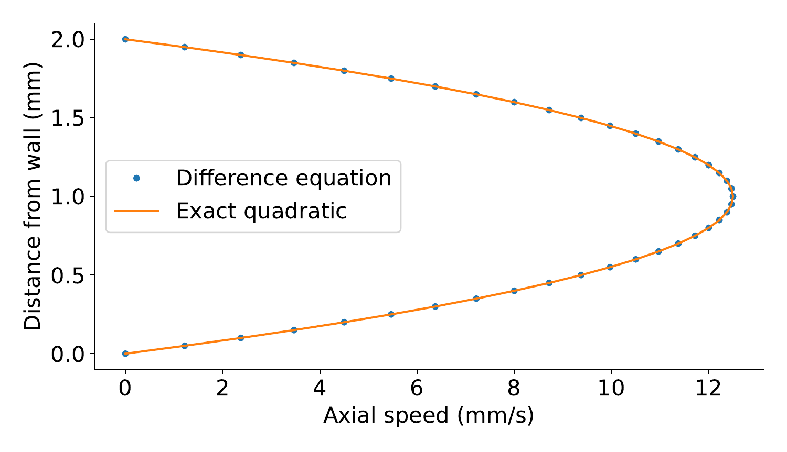
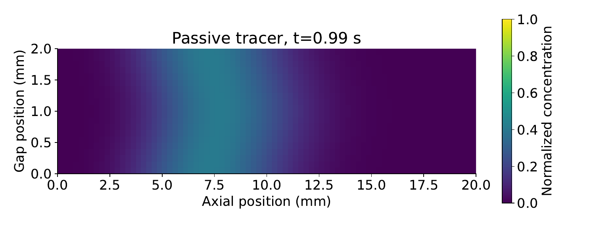

Conservation, viscous flow and transport
Begin with a control-volume budget, derive pressure-driven motion between stationary walls, and use that velocity to transport a passive tracer. The calculation separates a reduced momentum equation from the subsequent transport problem.
Velocity from the pressure gradient
The steady fully developed channel equation has a quadratic solution. The finite-difference solution reproduces its nodal values to roundoff; integrating those values introduces a separate quadrature error.

Transport through a shear flow
A short inlet pulse moves faster near the center of the channel. Diffusion spreads the normalized concentration across the shear. Every interior numerical face contributes equally and oppositely to its neighboring cells.

Reproduce and examine the calculation
With NumPy, SciPy and Matplotlib installed, run python channel_transport.py --output results. The notes specify the boundary conditions, sufficient time-step restriction, experiments and exercises. Compare changes in physical diffusivity with changes in mesh resolution.